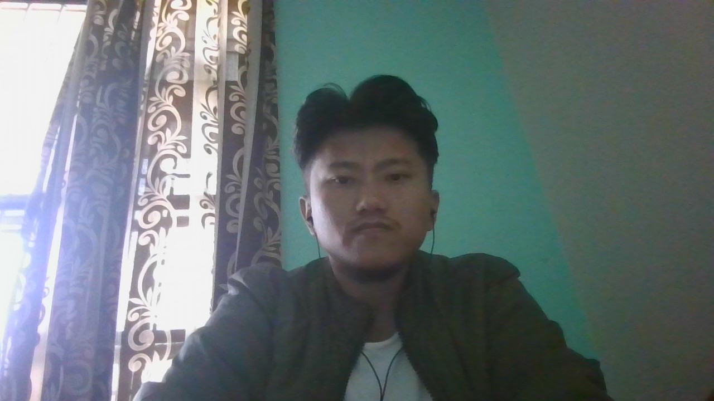

Summary
Hi, My name is Tenzin Tsega. You can call me 'Tenzin' or 'Tsega', whichever suits you. I'm a Web Developer, simple as that. I like to
build things and other times I enjoy learning about how things work. Most of my work I wish to build so as to help others and I'm
guessing when you are reading this that I have also started teaching others how to do web development on YouTube.

Education
- Till 10th Standard - T.C.V Chauntra
- High school - T.C.V Selakui
- College - Dalai Lama Institute, degree under Bangalore University
Work Experience
- One year Experience as an international voice process executive at Sagility
Skills
- Fast Typing
- English communication efficiency
- Adaptable to changes while picking up things on the way
Certifications
Japanese for beginners Certification
Hobbies
Contact Me Link